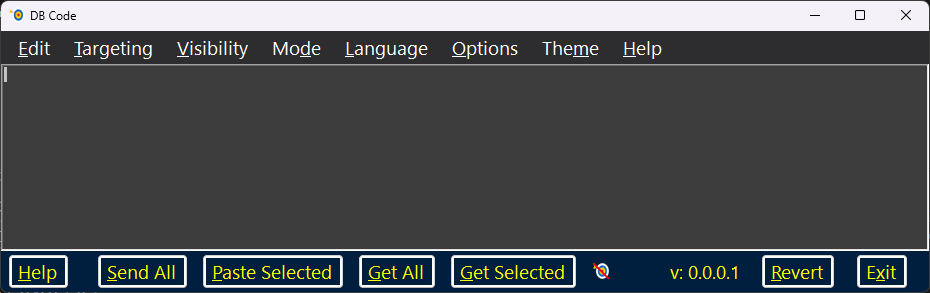
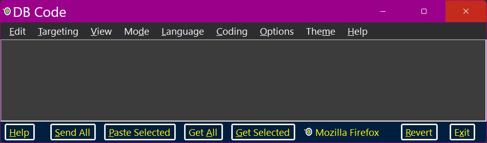
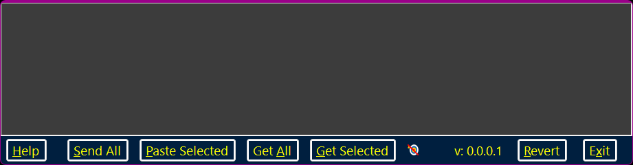
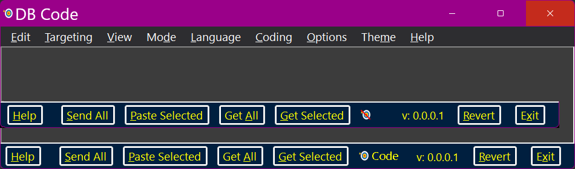

The Main Bottom Panels
This replacement for Dragon’s built–in dictation box is specifically designed for use with IDEs by programmers. It can also be used as a general-purpose dictation box replacement.



The DB Code Concept
DB Code’s fundamental purpose is to allow dictated speech to be transferred from a Dragon–friendly environment into a less than Dragon–friendly application.
In that respect, it is much like other dictation boxes — Dragon’s built–in dictation box, Speech Productivity’s Auto Box etc. While DB Code should work perfectly as a simple dictation box replacement, its ultimate goal is to provide a programmer with a tool for dictating code into IDEs.
DB Code has all the expected features of a plaintext dictation box replacement.
It can transfer plain text into another application — either a targeted application or whichever application is next in the Z–Order. It can get richly formatted or plain text directly from another application (again, either a targeted application or whichever application is next in the Z–Order).
The opacity (transparency) can be adjusted to five different levels. There is a Mode selector which allows the menu to be completely hidden (when hidden it still responds to keyboard shortcuts).
There is a Scrolling menu which allows the active panel to be scrolled (if it has automatically generated either horizontal or vertical scrollbars). The options are: to top; to bottom; to extreme left edge; to extreme right edge; one letter left or right; one line up or down; one page up, down, left or right. Since these all have keyboard shortcuts one could create a single Advanced Scripting [list] command to accomplish all scrolling commands.
DB Code is designed for writing code.
Because it is designed for writing code, it has syntax highlighting for numerous coding languages (C#, C, C++, Basic, F#, HTML, CSS, XML, JSON, PowerShell, Batch (CMD), SQL, Markdown, Python, Plain Text). Each language has individual syntax highlight coloring which is completely configurable via the Theme.
There are some built–in code snippets and code manipulation tools for each language (other than plain text) — these are more in the nature of examples for the programmer user to expand upon according to their own needs.
DB Code is fully themed.
There are seven built–in Themes: Light; Dark; Classic; High Contrast Light; High Contrast Dark; Light Pastel and Dark Pastel. These are just a starting point — the user may create as many custom themes as they desire. Themes also allow the user to specify four different fonts: Interface; Menu; Bottom Panel and RichTextBox — each Theme gets its own assortment of fonts. All built–in Themes default to Segoe UI, 14 point, regular style. The GUI is completely font and color sensitive and will re–arrange itself dynamically if any font or color is changed.
There is a comprehensive Options dialog.
It is divided into five sections: “General”; “Targeting”; “Coding”; “Brace Matching” and “Shortcuts”.
The General Options page has miscellaneous settings. The Targeting page has entries where the user may identify allowable and disallowed targets. The Coding page is currently unused. The Brace Matching page allows the user to specify colors for brace matching — () {} []. Up to ten levels of blocks can be identified individually; the colors do not wrap until all ten have been used. There is a dynamic example so that the user can immediately see the results of color choices.
There is a “Keyboard Shortcuts and Accelerator Manager” page. All menu items ship with a default accelerator and those which have actions all have a default keyboard shortcut. This allows the user to completely modify all GUI strings (menu item texts, button texts etc.) for language localization or convenience. The same is true for keyboard shortcuts.
There is extensive context–sensitive help available.
The Main Bottom Panels
The main interface and all dialogs have Bottom Panels. These Bottom Panels will always have a “Help” button at the extreme left (providing context–sensitive help in the user’s preferred browser) and some form of closure button at the extreme right (this could be the “Exit” button for closing DBCode, a “Cancel” button, an “OK” button etc.). In between these leftmost and rightmost buttons there might be other buttons, checkboxes and/or other controls which apply to the dialog in general.

The Main bottom panel comes in two possible configurations: untargeted and targeted. The above composite image shows both — the top is the untargeted and the bottom is the targeted version. The only difference is that the targeted version gives an indication of what the name of the targeted application is (it might also include other information from the title bar of the targeted application).
The “Send All” button causes the entire content of the RichTextBox to be inserted at the current cursor location of the target application.
The “Paste Selected” button causes the selected content of the RichTextBox to be inserted at the current cursor location of the target application.
The “Get All” button causes the entire content of the targeted application to be inserted at the current cursor location of the DBCode.
The “Get Selected” button causes the selected content of the targeted application to be inserted at the current cursor location of the DBCode.
The targeted icon changes subtly depending upon whether targeting is in force; there is a red slash across the targeting bull’s–eye when there is no specific target. Additionally, if there is a target all or part of that targeted application’s name or its window’s title will be displayed.
DBCode’s version will be displayed in this format: “v:[primary version number].[secondary version number].[minor version number].[build number]”
The “Revert” button restores the menu, exiting the minimal mode.